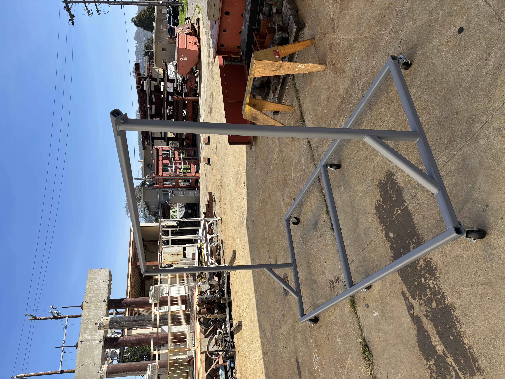
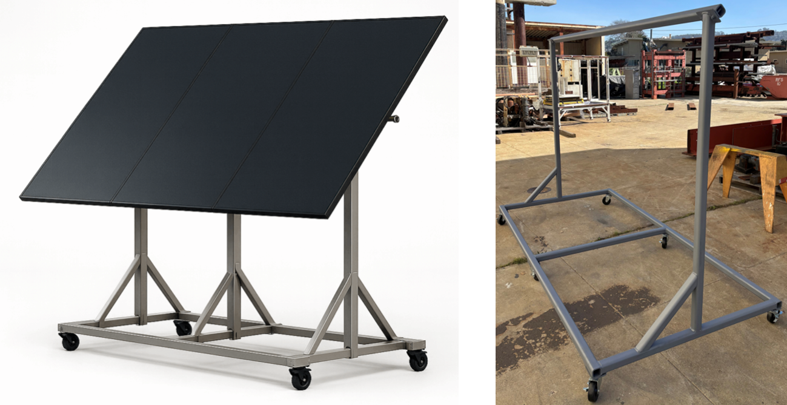
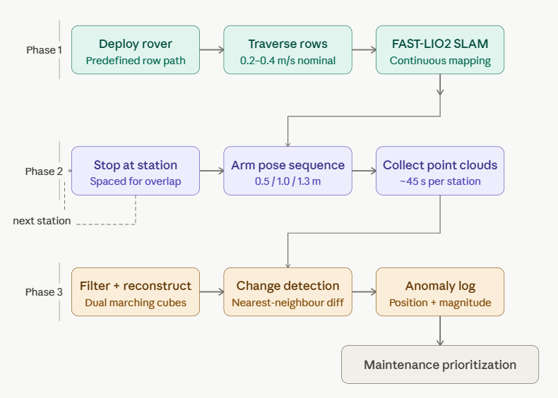
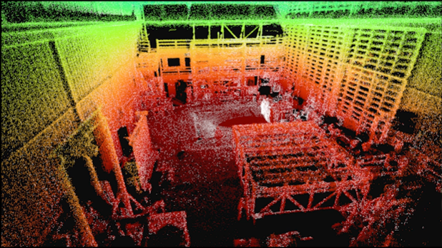

Electrical operation
String-level inverter data will be used to monitor voltage, current, power, and energy during controlled exposure cycles.
A portable photovoltaic testbed with inverter-based electrical monitoring, structural and geometric sensing, and robotic inspection capabilities for studying how real-world environmental stressors affect solar-energy performance and asset health.
The platform is designed to support controlled and repeatable experiments on photovoltaic asset health, electrical performance, and structural behavior. It will help quantify how environmental and mechanical stressors change the operational behavior of PV systems and how these changes can be detected earlier using integrated sensing.
String-level inverter data will be used to monitor voltage, current, power, and energy during controlled exposure cycles.
The testbed will track deformation, frame drift, connection loosening, and dynamic response under realistic and extreme loading conditions.
Geometric, structural, environmental, and electrical data streams will support digital-twin development and field-informed performance models.
The testbed uses utility-scale thin-film CdTe photovoltaic modules and an inverter architecture selected to match their high-voltage, low-current behavior. The configuration is intended to remain flexible as the research evolves from initial deployment to expanded experimental configurations.
Series-connected pairs form the fundamental electrical unit.
Independent string-level monitoring and operational flexibility.
Expandable for future test configurations and added storage studies.
Testing at UC Berkeley’s Richmond Field Station facilities.



The monitoring approach combines electrical measurements, environmental data, structural response, and robotic spatial mapping. The objective is not only to measure PV output, but also to understand the physical causes of performance degradation.
Subject panels and frame to controlled environmental and mechanical conditions.
Collect inverter, temperature, humidity, irradiance, vibration, and geometric data.
Use LiDAR-enabled robotic inspection to capture point clouds and repeated geometry.
Quantify changes in panel surfaces, frame alignment, support drift, and obstructions.
Integrate data into digital-twin models for performance and condition assessment.
This section currently displays simulated real-time photovoltaic generation data. The placeholder can later be connected to the inverter, data-acquisition system, or cloud data stream from the solar energy testbed.
Temporary randomized value updated every few seconds.
Approximate simulated energy accumulated during this page session.
Placeholder status for future inverter data-stream integration.
Note: These are temporary simulated values for demonstration only. They should be replaced with measured data from the inverter or monitoring system once the live data stream is available.
The solar energy testbed is being integrated with a ground-based robotic inspection framework that uses LiDAR, SLAM, and repeatable navigation to monitor geometric and structural changes in photovoltaic systems. This capability complements electrical monitoring by detecting physical changes that may occur before they are clearly visible in the inverter data.


A four-wheel-drive unmanned ground vehicle can move through solar-array rows and provide close-range inspection of panels, frames, supports, terrain, and vegetation.
LiDAR sensing and SLAM-based mapping generate three-dimensional point clouds for geometric inspection, localization, repeat scanning, and change detection.
An articulated sensor mount improves viewpoint flexibility and helps reduce occlusion, especially for under-panel areas, support members, and rack geometry.


Placeholder for future CAD rendering of the articulated LiDAR sensing system or its operation.


This robotic inspection concept builds on the framework described in the conference paper, “A LiDAR-Enabled Ground Rover Framework for Smart Monitoring in Utility-Scale Solar Power Systems: Design and Preliminary Validation.” The paper presents the rover architecture, LiDAR-based mapping, the motivation for articulated sensing, and the validation pathway linking laboratory calibration, controlled testing, and outdoor deployment using the portable PV testbed.
Additional technical background is provided in the conference paper: A LiDAR-Enabled Ground Rover Framework for Smart Monitoring in Utility-Scale Solar Power Systems: Design and Preliminary Validation. The paper describes the motivation, system architecture, LiDAR/SLAM workflow, articulated arm concept, portable PV testbed, and planned validation pathway.
The paper explains the need for spatial and geometric monitoring of solar farms, especially because some early-stage anomalies may not be immediately visible in electrical performance data. These include panel displacement, frame deformation, vegetation encroachment, terrain change, and post-event structural changes.
The PDF provides more detailed background on the proposed robotic inspection system, the preliminary laboratory validation, and the planned use of the portable solar-energy testbed for outdoor experiments.
Citation: Omar Shabana and Khalid M. Mosalam, A LiDAR-Enabled Ground Rover Framework for Smart Monitoring in Utility-Scale Solar Power Systems: Design and Preliminary Validation, International Telecommunications Conference (ITC-EGYPT’2026), Egyptian Military Academy, Cairo, EGYPT, 27–30 JULY 2026, https://www.itc-egypt-adc.org/.
Open Background Paper PDFThe testbed will support multi-phenomena studies that link field exposure to performance loss, structural response, and functional recovery.
Dust accumulation, coating durability, and response to air, water, or pulsed-jet cleaning systems.
Temperature-driven performance variation, thermal cycling, and temperature-related degradation patterns.
Vegetation encroachment, surface obstruction, and partial shading effects on string-level performance.
Frame movement, panel displacement, connection loosening, and dynamic response under mechanical excitation.
Localized impact scenarios to evaluate geometric changes, structural vulnerabilities, and recovery indicators.
Particulate exposure and controlled heat-flux scenarios, subject to safety review and approval.
A ground rover equipped with LiDAR and autonomous navigation will support repeated geometric inspection, point-cloud generation, and change detection of solar-panel surfaces, support frames, and surrounding site conditions.
The testbed is intended to produce high-quality datasets for solar-farm O&M, reliability-centered monitoring, and digital twins. These datasets can support asset-health indicators, performance derating models, and more resilient planning for PV infrastructure.
UC Berkeley personnel contributing to the solar energy testbed, operational monitoring, digital-twin, and robotic inspection activities.
The development of this solar energy testbed is supported in part through collaboration and engagement with NextPower and Cal-Next. Their support and partnership are gratefully acknowledged.
Collaboration and engagement supporting the development of the solar energy testbed and its future monitoring applications.
Visit NextPowerCollaboration and engagement supporting clean-energy innovation, monitoring, and research translation.
Visit Cal-NextThe testbed design is being translated into an experimental platform for indoor and outdoor studies. Near-term priorities include final assembly, instrumentation, inverter integration, initial data logging, and robotic inspection trials. The platform is designed to evolve as new sensors, test scenarios, and operational questions emerge.